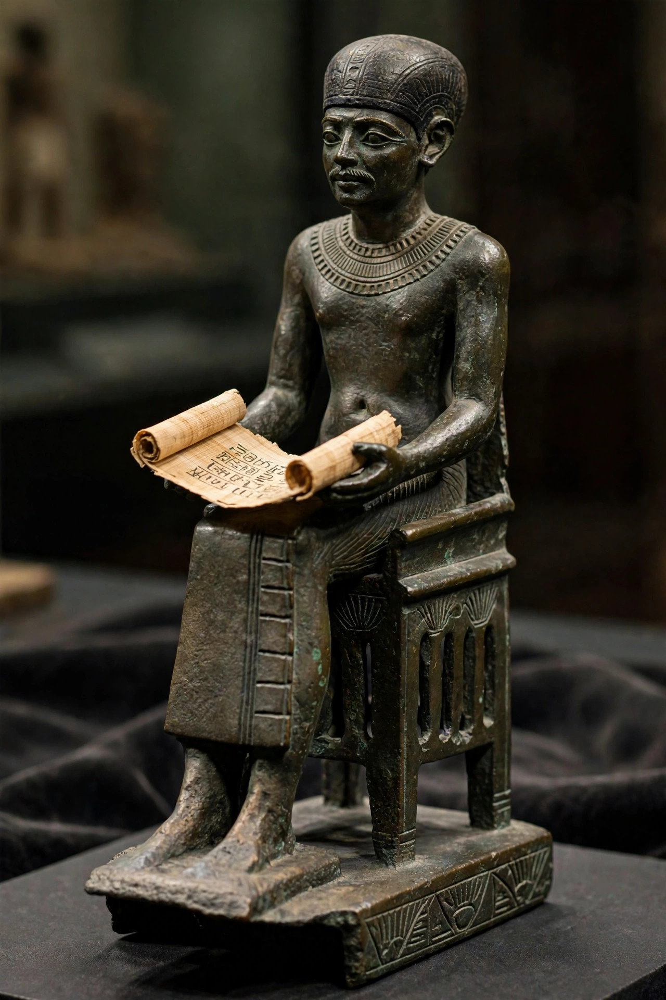

| Imhotep | |
|---|---|
| Flourished | c. 27th century BC |
| Occupation | Vizier, architect, physician, priest |
| Pharaoh | Djoser |
| Known for | Designing the Step Pyramid of Djoser |
Imhotep (Ancient Egyptian: "the one who comes in peace"; fl. late 27th century BC) was an Egyptian chancellor to the Pharaoh Djoser, probable architect of Djoser's Step Pyramid, and high priest of the sun god Ra at Heliopolis. He is considered the first architect, engineer, and physician in history known by name. Very little is known of Imhotep as a historical figure, but in the 2,000 years following his death, his reputation grew until he was deified — one of only a few non-royal Egyptians ever to be worshipped as a god.
Contemporary evidence for Imhotep consists chiefly of an inscription on the base of a statue of Djoser found at Saqqara, listing his titles: Chancellor of the King of Lower Egypt, first after the king, administrator of the great palace, high priest of Heliopolis, builder, chief carpenter, chief sculptor, and maker of vases in stone. As architect of the Step Pyramid complex, Imhotep pioneered building in dressed stone on a monumental scale.
Later tradition credited Imhotep as the author of a medical treatise sometimes identified with the Edwin Smith Papyrus, a remarkably rational surgical text, and as a sage whose proverbs were still quoted in the New Kingdom. From the New Kingdom onward, scribes poured a libation to Imhotep before writing.
Imhotep's cult rose from the Late Period and flourished under the Ptolemies, when he became a god of medicine and wisdom, equated by the Greeks with Asclepius. Pilgrims sought healing at his sanctuaries, notably at Saqqara, where his tomb — which has never been securely identified — was believed to lie. Hundreds of small bronze statuettes show him as a seated scribe with a papyrus scroll on his lap.